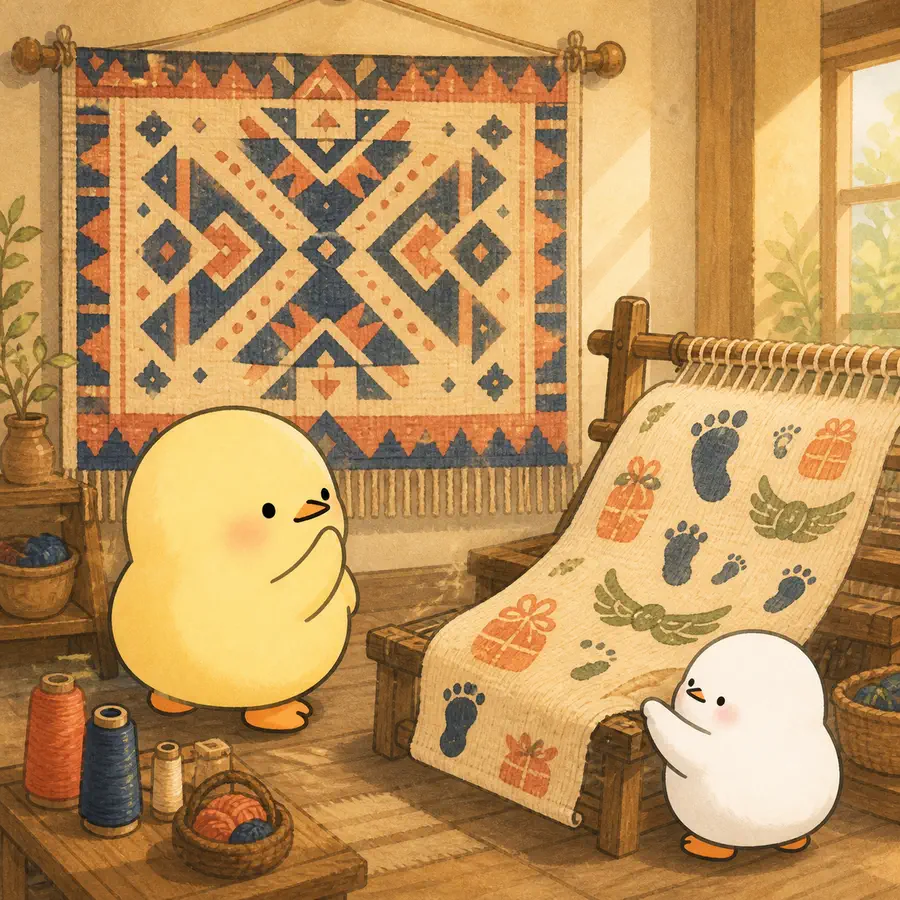
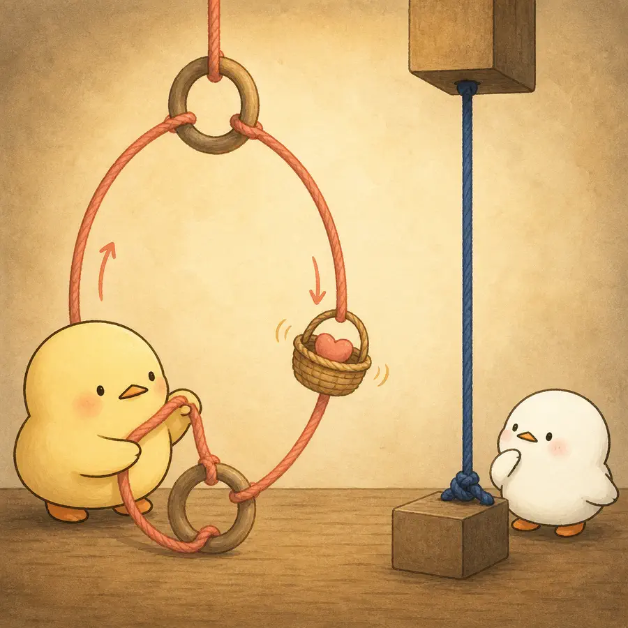
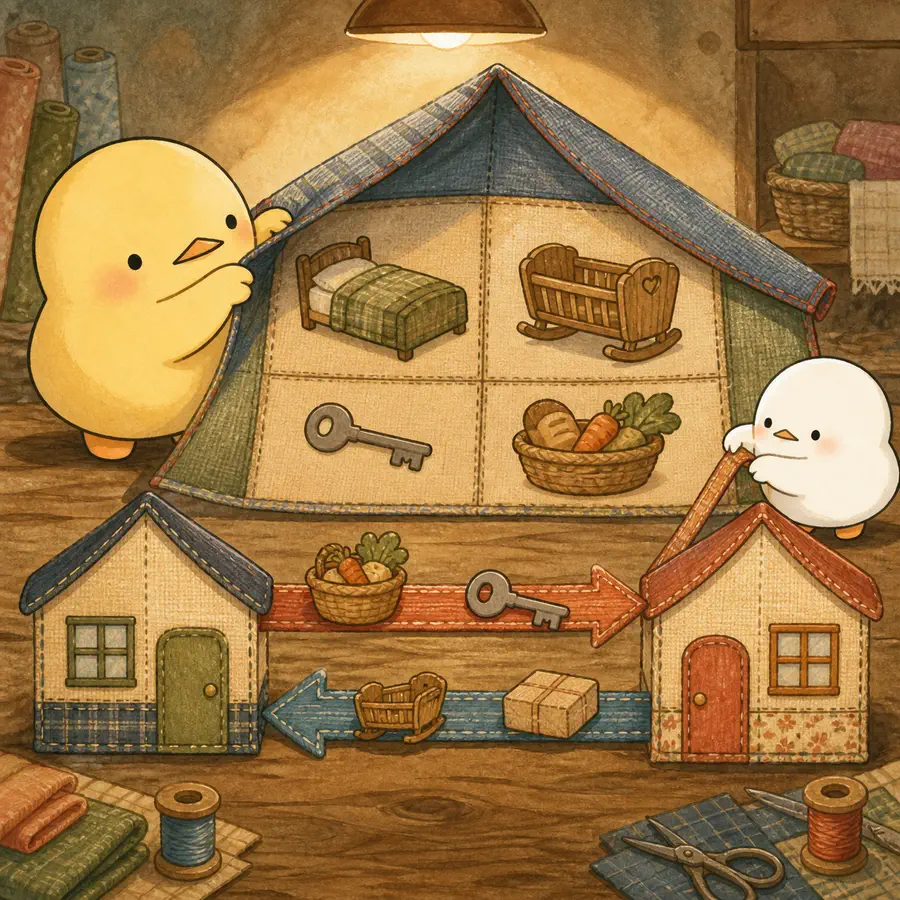
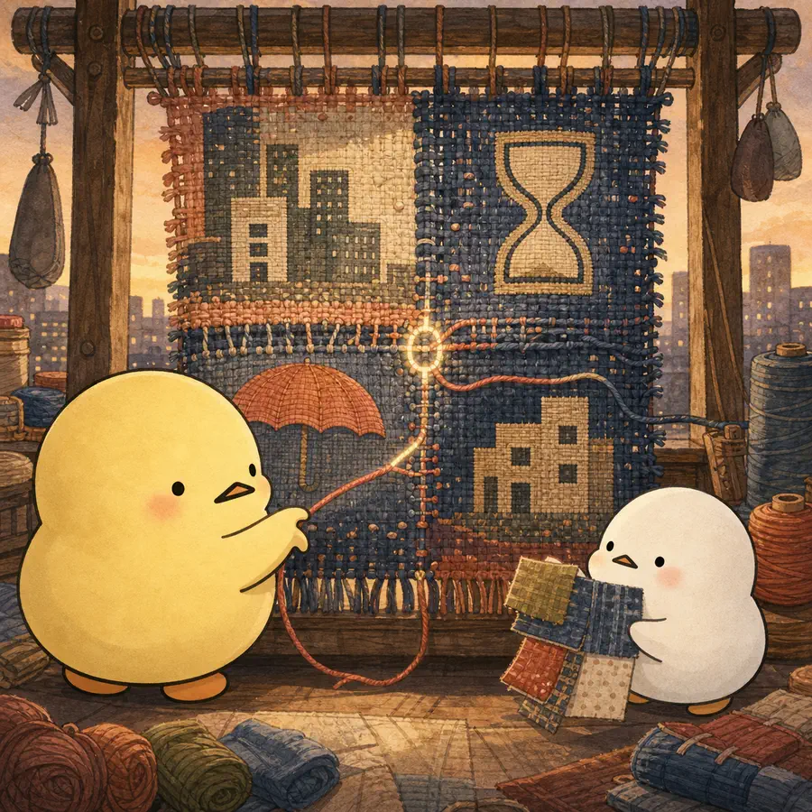

ILLUSTRATED OVERVIEW
아시아의 효와 세대관계는 한 모습일까?
효의 믿음과 실제 행동, 함께 사는 방식과 주고받는 지원은 하나로 묶이지 않습니다. 변화하는 세대관계를 직조 공방의 네 매듭으로 풉니다.
옆으로 넘겨 4컷 보기
-

효 규범에 대한 동의와 실제 접촉·동거·지원 행동은 구분해야 한다.
-

이중 효 모형은 상호적 효와 권위주의적 효를 구별한다.
-

동거는 부모와 성인자녀 양쪽의 필요에 반응하며, 비동거 관계에서도 지원은 이어질 수 있다.
-

아시아의 세대관계는 일률적으로 붕괴하거나 보존되는 대신 정책과 필요 속에서 재협상된다.